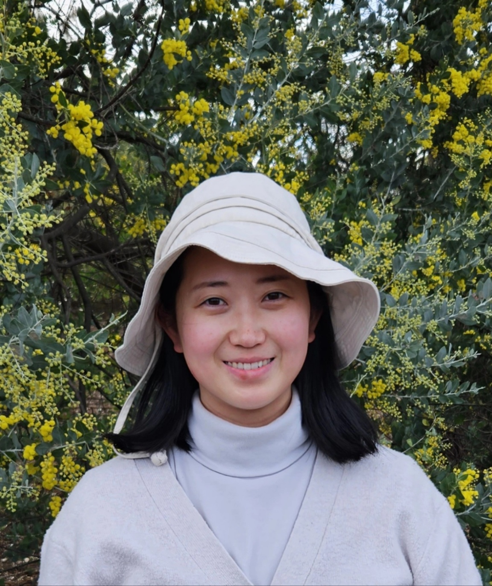

An early childhood educator where I use my enthusiasm for working with children, compassionate nature, education and experience in Early Childhood Development to create a fun, safe, and stimulating environment for children to learn and grow.